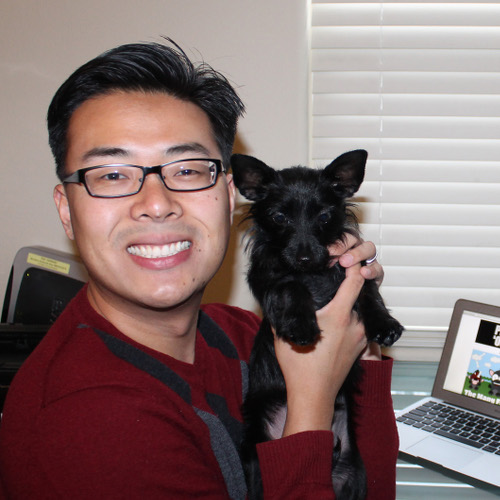

I'm glad you made it this far on my website. This page is just dedicated to all the things that make me who I am. I love to cook + eat, my family means the world to me (this includes both my dogs), and oh yeah, I love to play with computers and technology in general.
When I was a freshman in High School I loved creating Flash games using Adobe Flash, and I would create the artwork and created simple logic based animations. I never thought I could create actual programs and thus most of my early days of creating ended there. It wasn't until some time in 2013 that Flappy Bird gained popularity and became a must have app that everyone was playing. This led to a simple Google search about making mobile games, before I did this research I thought it wasn't possible to create any programs without a Comp Sci degree, but after much research into the topic I quickly discovered there was a mountain load of lessons, guides, and tutorials which could help someone learn how to program. The first thing I did was sign up for lessons on Front End Development with HTML & CSS being the main focus.
Through the use of many different books and online courses I taught myself the fundamentals needed to start coding. While I had created and edited a few Wordpress blogs in the past, the first time I made a webpage from scratch I was shocked at how great of an accomplishment it was to make something with the fundamental building blocks. But when I created an application and loaded it on my phone and was immediately able to see what I put together directly on my device I knew I was hooked on this cycle of developing software. This isn't to say that coding gets easier because new challenges arise constantly, but I'm forever thankful for the community and stack overflow which has helped me solve many problems and gives me a chance to walk in the same valley with giants.
My next steps forward are to continue applying my learning and creating, I believe that trial by fire is a great way to learn something, everything takes deliberate practice and that by doing small projects which keep progressing up the ladder you get to learn new skills along the way.